-
Bandeira Lésbica
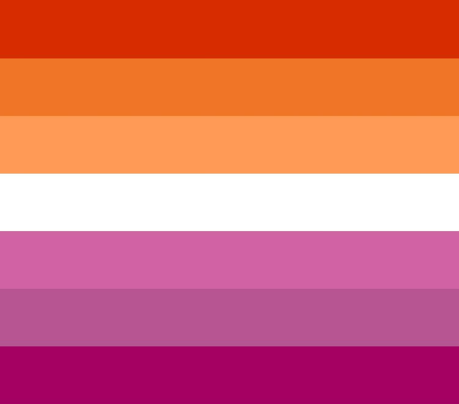Emily Gwen projetou a Bandeira do Orgulho Lésbico em 2018. Ela apresenta sete tons de listras rosa, laranja e vermelho,com uma listra branca no centro. As listras rosa e vermelha representam amor e atração por mulheres, a listra laranja representa comunidade e a listra branca representa intersexualidade.
-
Bandeira Gay
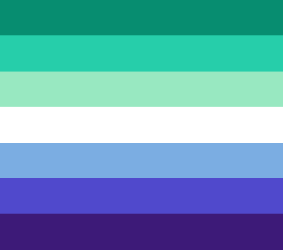O design foi proposto por um usuário do Tumblr em 2019 e, embora tenha enfrentado controvérsia no início (com acusações de que era transfóbica e copiava a bandeira lésbica), acabou sendo aceito pela comunidade. Ele apresenta cinco cores (às vezes sete), variando de verde a branco e roxo. As cores verde e turquesa representam comunidade e cura. O branco representa indivíduos não-conformes de gênero, transgêneros e não binários. E as cores azul a roxo representam amor,diversidade e fortaleza.
-
Bandeira Bissexual
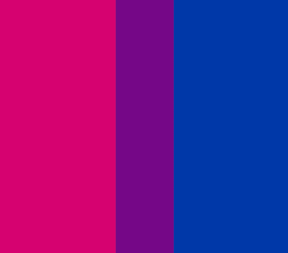A Bandeira do Orgulho Bissexual foi criada em 1998 pelo ativista LGBTQ Michael Page como um símbolo daqueles na comunidade gay que são atraídos por mais de um gênero. A faixa rosa da bandeira representa a atração pelo mesmo sexo,enquanto sua faixa azul representa a atração pelo sexo oposto, e sua faixa roxa representa uma combinação de ambos.
-
Bandeira Transgênero
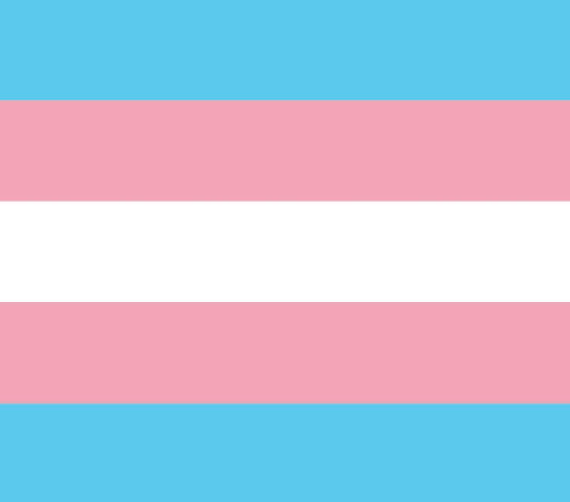A Bandeira do Orgulho Transgênero foi criada pela ativista Monica Helms em 1999 para representar aqueles cuja identidade de gênero difere do sexo que lhes foi atribuído no nascimento. A Bandeira Transgênero apresenta um conjunto de cinco listras horizontais em azul claro, rosa e branco. A listra azul claro representa a cor tradicional para bebês meninos, a listra rosa representa a cor tradicional para bebês meninas e a listra branca representa indivíduos não binários ou não conformes com o gênero.
-
Bandeira Queer
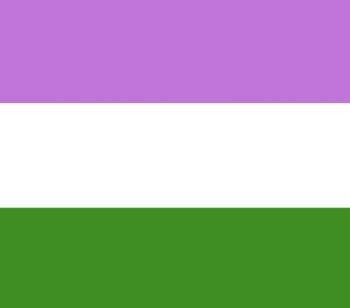A Bandeira do Orgulho Genderqueer foi criada pela artista e ativista Marilyn Roxie em 2011. Ela apresenta um conjunto de três listras horizontais em lilás, branco e verde-amarelo escuro. A listra lilás representa a androginia e a combinação de traços masculinos e femininos, a listra branca representa a identidade agênero, e a listra verde-amarelo escuro representa as identidades e experiências únicas de indivíduos genderqueer.
-
Bandeira Intersexo
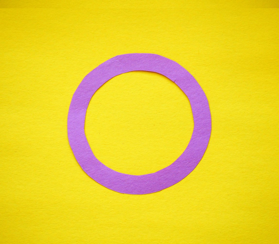A Bandeira Intersexo foi criada pelo ativista intersexo Morgan Carpenter em 2013 em resposta à falta de visibilidade e compreensão daqueles que não se conformam ao binário de gênero padrão. Ela foi hasteada pela primeira vez em um evento do Dia Intersexo na Austrália. O círculo da bandeira representa totalidade, enquanto o fundo amarelo representa neutralidade de gênero. O roxo representa a diversidade de pessoas intersexo.
-
Bandeira Assexual
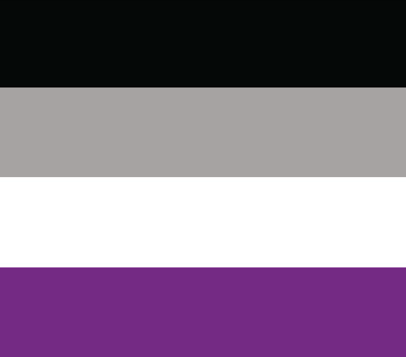A Bandeira do Orgulho Assexual é um símbolo daqueles que sentem pouca ou nenhuma atração sexual. Foi criada pelo ativista assexual e artista David Jay em 2010 e apresenta um conjunto de quatro listras horizontais em preto, cinza, branco e roxo. A faixa preta representa a assexualidade, a faixa cinza representa as identidades assexuada e demissexual, a faixa branca representa a sexualidade e a faixa roxa representa a comunidade.
-
Bandeira Pansexual
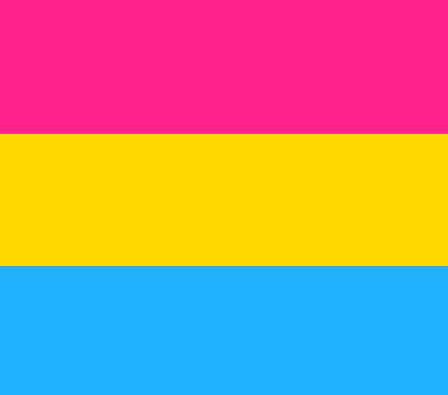A Bandeira do Orgulho Pansexual foi criada pela designer gráfica e ativista Evie Varney em 2010 para representar indivíduos atraídos por pessoas de todos os gêneros e identidades de gênero. A faixa rosa representa atração por mulheres, a faixa azul representa atração por homens e a faixa amarela representa atração por pessoas de todos os outros gêneros, incluindo indivíduos não binários.
-
Bandeira Não - Binária
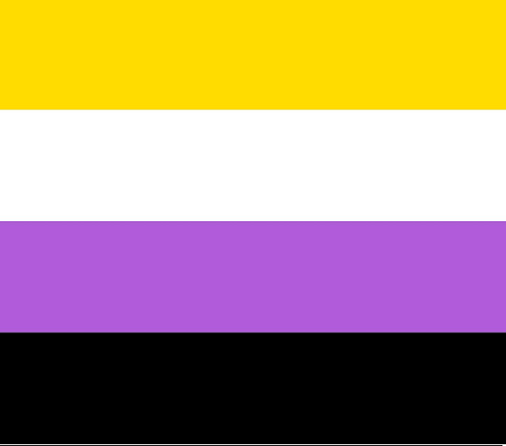Um símbolo da comunidade não binária, que inclui indivíduos cuja identidade de gênero não é exclusivamente masculina ou feminina, a bandeira Não Binária foi criada em 2014 pelo ativista não binário Kye Rowan. A bandeira apresenta listras amarelas, brancas, roxas e pretas. A faixa amarela representa gênero fora do binário, a faixa branca representa aqueles que se identificam com múltiplos gêneros, a faixa roxa representa uma combinação de masculinidade e feminilidade, e a faixa preta representa aqueles que se identificam como agênero (aqueles sem gênero).
-
Bandeira Demissexual
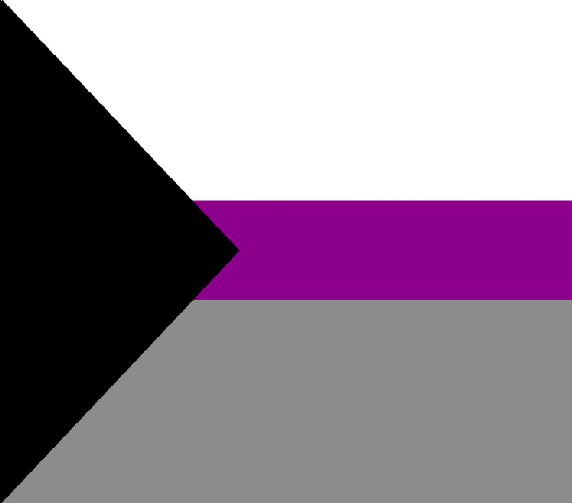Demissexuais só sentem atração sexual após formarem um forte vínculo emocional com outra pessoa. A bandeira desta comunidade foi criada em 2010 por um membro do fórum AVEN (Asexual Visibility and Education Network) conhecido como Alexander.Esta bandeira é uma adaptação da bandeira assexual. Ela visa fornecer uma representação visual da identidade demissexual e promover a conscientização da comunidade. Ele apresenta um triângulo preto à esquerda, que é um aceno para a comunidade assexual maior e pretende representar uma falta de atração sexual. Em contraste, a faixa branca superior simboliza a alossexualidade, ou a presença da sexualidade. A faixa cinza inferior simboliza as pessoas gray-ace ou graysexuality na comunidade. Isso pretende incluir aqueles que se enquadram em algum lugar entre assexuais e sexuais, ou que podem não ter uma sexualidade claramente definida. Por fim, a faixa roxa no meio divide a bandeira e toca todas as outras cores. Esta é uma ode à cor roxa usada pela AVEN e, como na bandeira assexuada, ela tem a intenção de representar a comunidade.
-
Bandeira Drag Feather
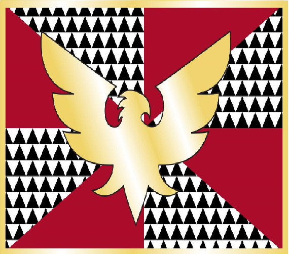A Drag Feather Pride Flag é um símbolo da comunidade drag, criado em 1999 pelo artista Sean Campbell. Ela apresenta uma fênix dourada que representa o renascimento e as paixões ardentes que a comunidade drag enfrentou nos primeiros anos da pandemia da AIDS.
-
Bandeira Aliados LGBTQIAPN+
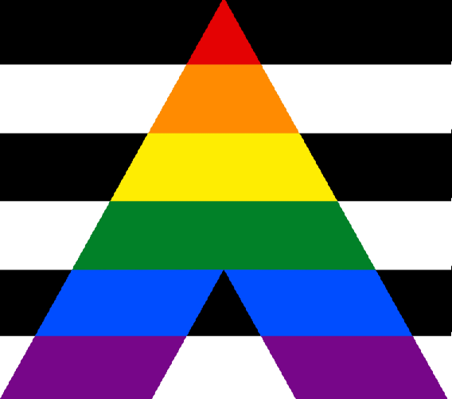Também é conhecida como a bandeira do hétero aliado. Foi criada em 1973 por familiares e amigos de pessoas LGBT+, que apoiavam a comunidade em sua luta por direitos civis e contra a homofobia. A bandeira tem o fundo listrado, em preto e branco, remetendo a heterossexualidade, e um triângulo colorido acima, simbolizando a bandeira arco-íris do orgulho LGBT+.
-
Bandeira Poliamor
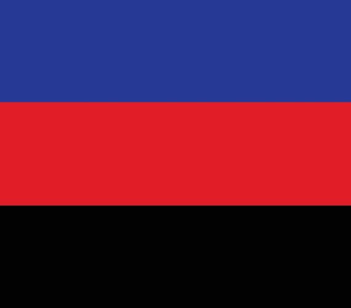A bandeira do poliamor representa as pessoas com diversos parceiros, em relacionamentos não monogâmicos. O azul na bandeira simboliza a abertura e honestidade, o vermelho, o amor, já o preto representa aqueles que, devido ao preconceito, têm que esconder os seus relacionamentos.
-
Bandeira Agênero

Pessoas agênero não se identificam com nenhum gênero. A sua bandeira simboliza nas cores preto, cinza e branco, a neutralidade ou a ausência de gênero. O verde representa as pessoas não-binárias.
-
Bandeira Urso
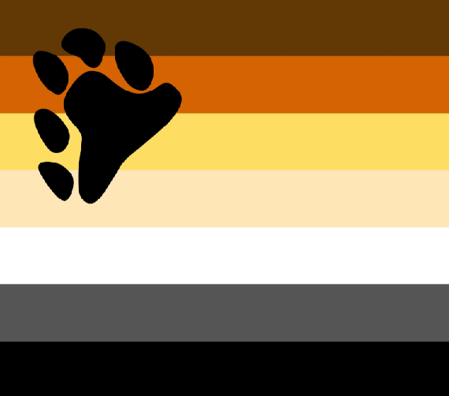Os chamados ursos são uma subcultura da comunidade gay, formada principalmente por homen (cis ou trans) homossexuais ou bissexuais. Geralmente, os homens que pertencem à comunidade ursina gostam de manter os pelos pelo corpo e o rosto, são grandes e fortes, e, por isso, a nomeação de ursos. As cores da bandeira, com vários tons de marrom, amarelo, branco e preto, simbolizam a pelagem dos ursos e também a cor da pele dos membros da comunidade. A pegada no canto superior esquerdo também remete ao animal urso.